高效 LLM 推理服务：推测解码
推测解码为何精确（拒绝采样）与加速比公式 S = E/(ck+1)；从独立小模型到 Medusa、EAGLE 1–4、MTP、DFlash、后缀检索等草稿方法；树验证、有损变体，以及按负载动态选择 k。
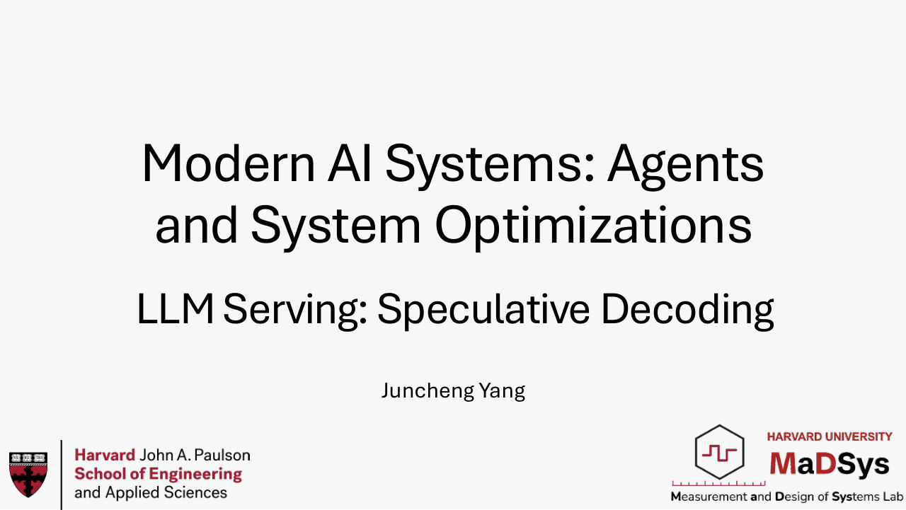
现代 AI 系统：智能体与系统优化
Juncheng Yang
LLM 推理服务：推测解码
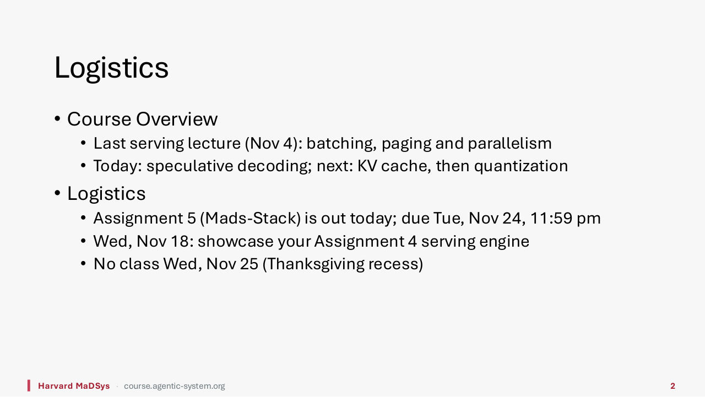
事务安排
- 课程概览
- 上一节推理服务课（11 月 4 日）：批处理、分页与并行
- 今天：推测解码；接下来：KV cache，然后是量化
- 事务
- 作业 5（Mads-Stack）今天发布；截止时间为 11 月 24 日（周二）晚 11:59
- 11 月 18 日（周三）：展示你的作业 4 推理服务引擎
- 11 月 25 日（周三）停课（感恩节假期）
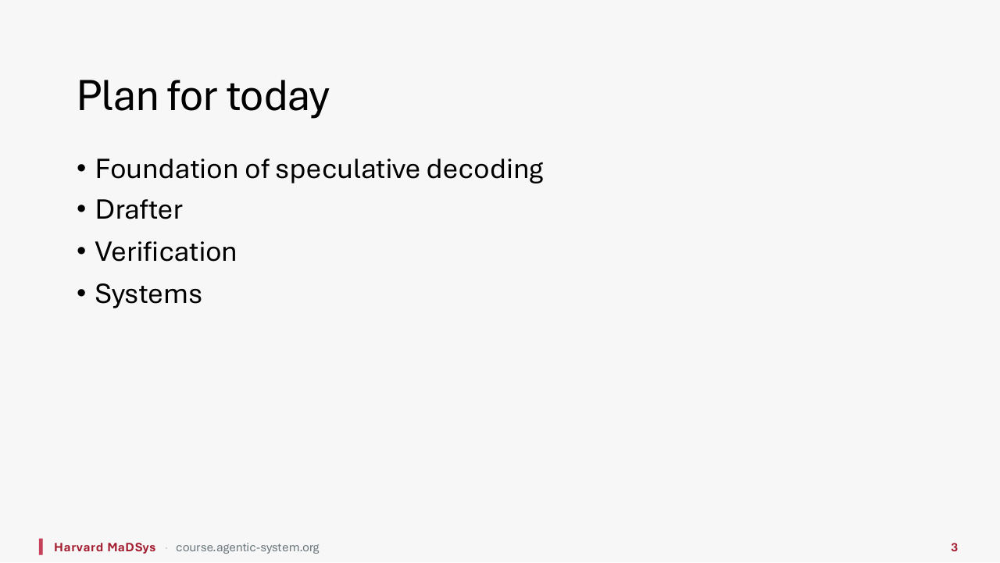
今天的安排
- 推测解码的基础
- 草稿模型（Drafter）
- 验证
- 系统
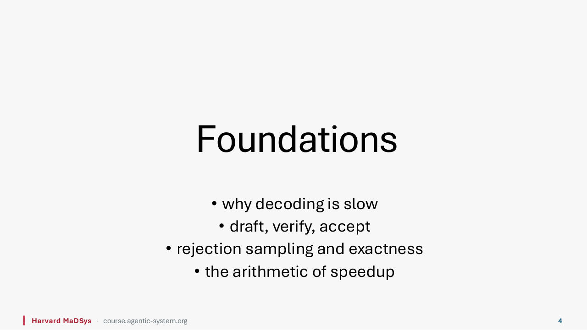
基础
- 为什么解码慢
- 起草、验证、接受
- 拒绝采样与精确性
- 加速比的算术
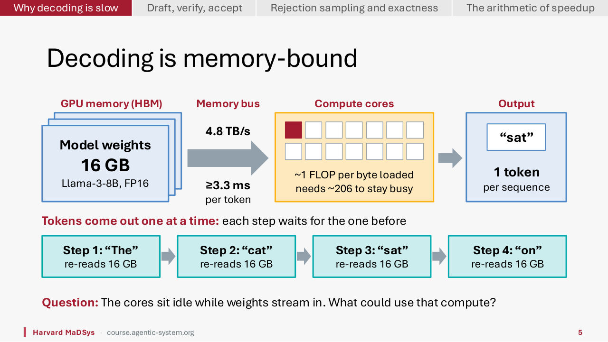
解码受内存带宽限制
（图：GPU 显存（HBM）中存放 16 GB 模型权重（Llama-3-8B，FP16）→ 4.8 TB/s 的内存总线 → 计算核心 → 每个序列输出 1 个 token，如“sat”）
- 每个 token 至少 3.3 ms
- 每加载 1 字节只有约 1 FLOP；要让计算核心保持忙碌需要约 206
- token 只能一个一个地出来：每一步都要等前一步
- 第 1 步：“The”——重读 16 GB
- 第 2 步：“cat”——重读 16 GB
- 第 3 步：“sat”——重读 16 GB
- 第 4 步：“on”——重读 16 GB
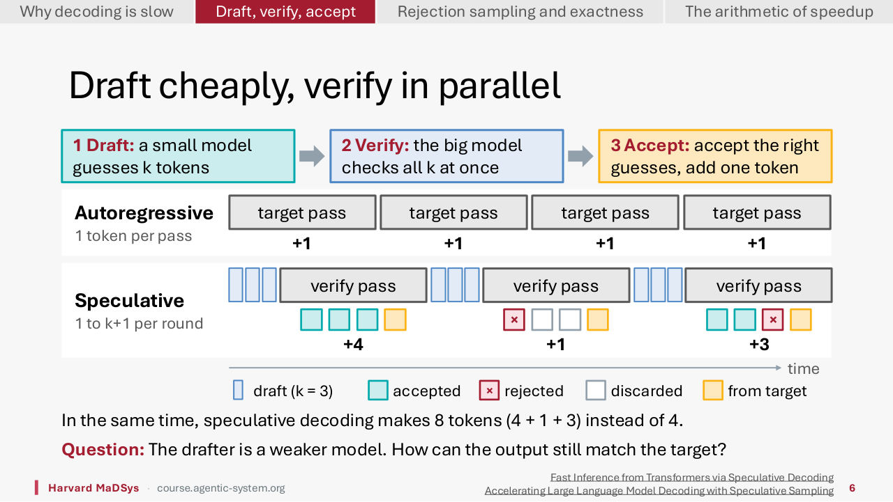
廉价起草，并行验证
- 自回归：每次前向 1 个 token（目标模型前向 +1、+1、+1、+1）
- 推测解码：每轮 1 到 k+1 个（验证前向 +4；验证前向 ×，+1；验证前向 ×，+3）
- 起草：一个小模型猜 k 个 token
- 验证：大模型一次性检查全部 k 个
- 接受：接受猜对的部分，再追加一个 token
（图例：草稿（k = 3）/ 已接受 / × 被拒绝 / 丢弃 / 来自目标模型）
（Fast Inference from Transformers via Speculative Decoding；Accelerating Large Language Model Decoding with Speculative Sampling）
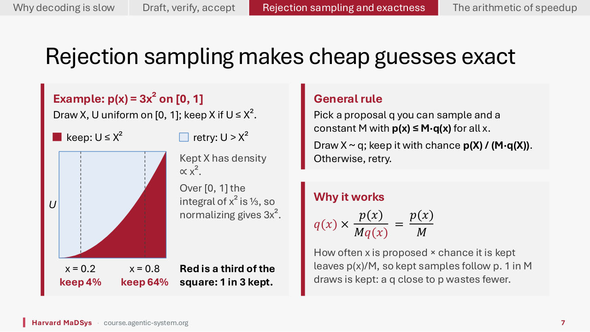
拒绝采样让廉价的猜测变得精确
例子：[0, 1] 上的 p(x) = 3x²
- 从 [0, 1] 均匀抽取 X 和 U；若 U ≤ X² 则保留 X
- x = 0.2：保留 4%；x = 0.8：保留 64%
- 被保留的 X 的密度 ∝ x²。x² 在 [0, 1] 上的积分是 ⅓，所以归一化后得到 3x²
- 红色区域占正方形的三分之一：每 3 次保留 1 次
一般规则
- 选一个你能采样的提议分布 q，以及一个常数 M，使得对所有 x 都有 p(x) ≤ M·q(x)
- 抽取 X ~ q；以概率 p(X) / (M·q(X)) 保留它。否则重试
为什么可行
- q(x) × p(x) / (M·q(x)) = p(x) / M
- x 被提出的频率 × 它被保留的概率 = p(x)/M，所以保留下来的样本服从 p。每 M 次抽取保留 1 次：q 越接近 p，浪费越少
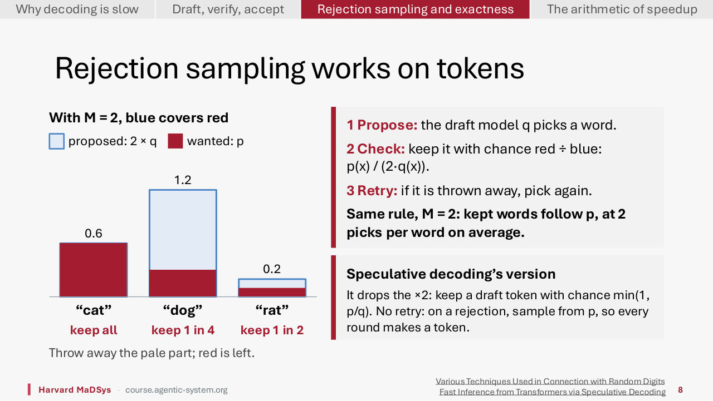
拒绝采样同样适用于 token
（图：M = 2 时，蓝色（提议：2 × q）覆盖红色（目标：p）——“cat”0.6 全部保留；“dog”1.2 保留 1/4；“rat”0.2 保留 1/2。扔掉浅色部分，剩下的就是红色）
- 提议：草稿模型 q 挑一个词
- 检查：以 红色 ÷ 蓝色 的概率保留它：p(x) / (2·q(x))
- 重试：如果被扔掉，就再挑一个
同样的规则，M = 2：保留下来的词服从 p，平均每个词要挑 2 次。
推测解码的版本
- 去掉 ×2：以 min(1, p/q) 的概率保留一个草稿 token
- 不重试：被拒绝时就从 p 中采样，因此每一轮都会产出一个 token
（Various Techniques Used in Connection with Random Digits；Fast Inference from Transformers via Speculative Decoding）
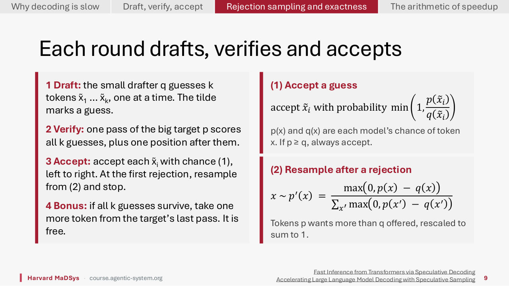
每一轮：起草、验证、接受
- 起草：小的草稿模型 q 一个一个地猜出 k 个 token x̃1 … x̃k。波浪号表示这是猜测
- 验证：大的目标模型 p 一次前向就给全部 k 个猜测打分，外加它们之后的一个位置
- 接受：从左到右，按公式 (1) 的概率接受每个 x̃i。遇到第一个拒绝时，按公式 (2) 重新采样并停止
- 奖励 token：如果 k 个猜测全部通过，再从目标模型的最后一次前向中多取一个 token。它是免费的
(1) 接受一个猜测：以概率 min(1, p(x̃i) / q(x̃i)) 接受 x̃i
- p(x) 和 q(x) 分别是两个模型给出 token x 的概率。若 p ≥ q，总是接受
(2) 拒绝后重新采样：x ~ p′(x) = max(0, p(x) − q(x)) / Σx′ max(0, p(x′) − q(x′))
- 只取 p 想要的比 q 提供的更多的那些 token，并重新缩放使总和为 1
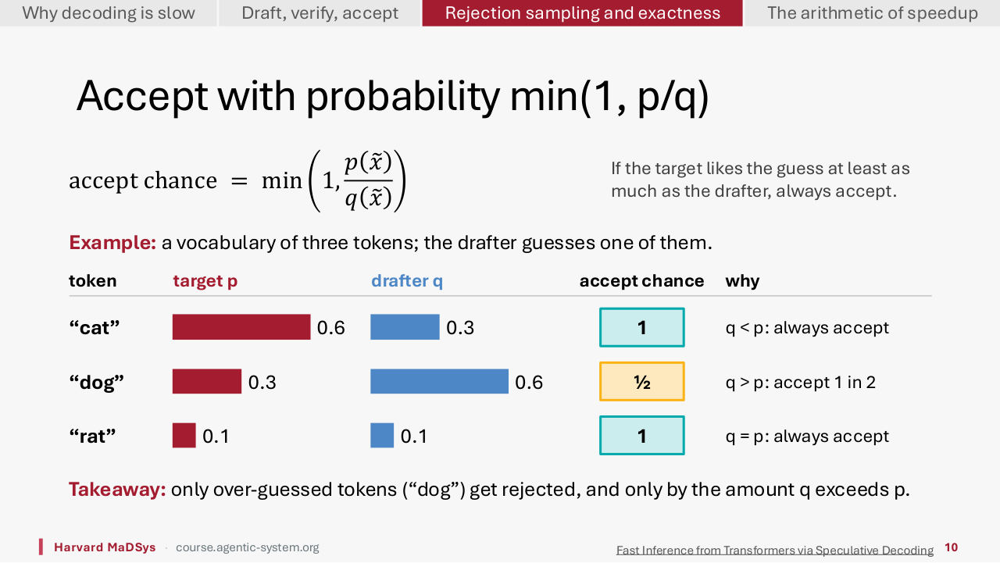
以概率 min(1, p/q) 接受
接受概率 = min(1, p(x) / q(x))：如果目标模型对这个猜测的偏好至少和草稿模型一样，就总是接受。
例子：词表只有三个 token；草稿模型猜其中一个。
| token | 目标 p | 草稿 q | 接受概率 | 原因 |
|---|---|---|---|---|
| “cat” | 0.6 | 0.3 | 1 | q < p：总是接受 |
| “dog” | 0.3 | 0.6 | ½ | q > p：二取一 |
| “rat” | 0.1 | 0.1 | 1 | q = p：总是接受 |
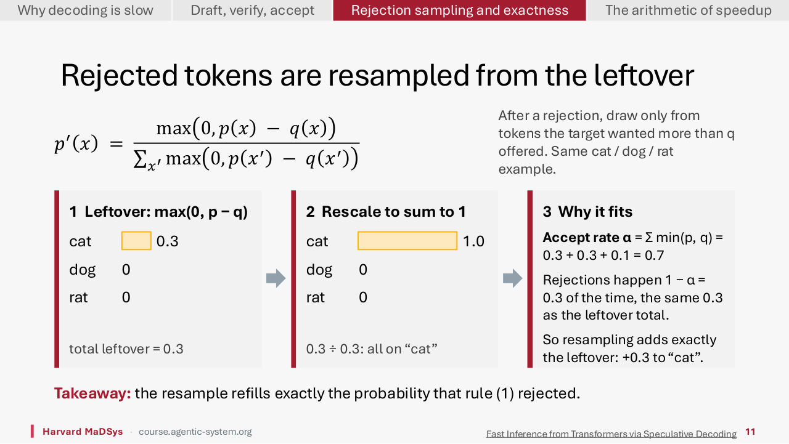
被拒绝的 token 从剩余部分中重新采样
p′(x) = max(0, p(x) − q(x)) / Σx′ max(0, p(x′) − q(x′))：被拒绝后，只从目标模型想要的比 q 提供的更多的那些 token 中抽取。仍用 cat / dog / rat 的例子。
- 剩余部分：max(0, p − q)——cat 0.3，dog 0，rat 0；剩余总量 = 0.3
- 缩放到总和为 1：0.3 ÷ 0.3——全部落在“cat”上（1.0）
- 为什么刚好吻合
- 接受率 α = Σ min(p, q) = 0.3 + 0.3 + 0.1 = 0.7
- 拒绝发生的概率为 1 − α = 0.3，正好等于剩余总量 0.3
- 所以重新采样恰好补上了剩余部分：给“cat”加 0.3
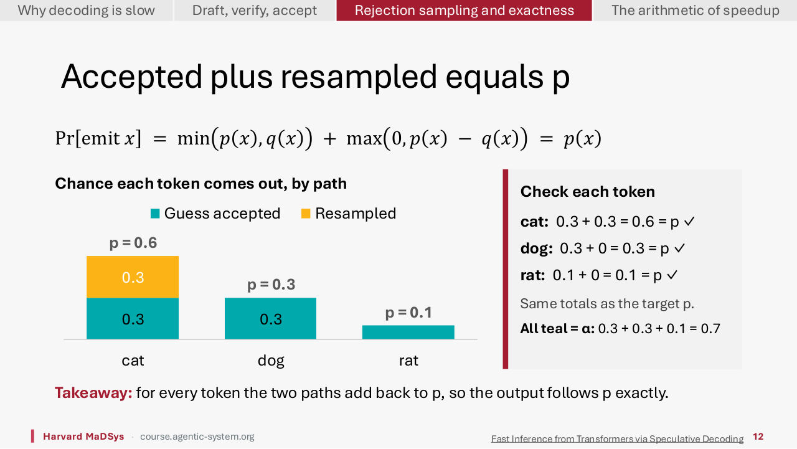
接受的部分加上重新采样的部分等于 p
Pr(输出 x) = min(p(x), q(x)) + max(0, p(x) − q(x)) = p(x)
逐个 token 检查（按路径看每个 token 被输出的概率）
- cat：0.3 + 0.3 = 0.6 = p ✓
- dog：0.3 + 0 = 0.3 = p ✓
- rat：0.1 + 0 = 0.1 = p ✓
与目标 p 的总量相同。所有青色部分合计 = α：0.3 + 0.3 + 0.1 = 0.7
（图例：猜测被接受 / 重新采样）
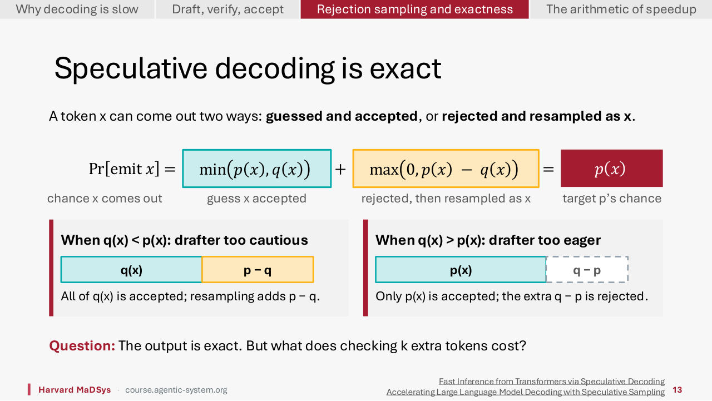
推测解码是精确的
一个 token x 有两种方式被输出：被猜中并接受，或者被拒绝后又重新采样成 x。
Pr(输出 x) = min(p(x), q(x))【猜测 x 被接受】+ max(0, p(x) − q(x))【被拒绝后重新采样为 x】= p(x)【目标 p 的概率】
- 当 q(x) < p(x)：草稿模型太保守。q(x) 全部被接受；重新采样补上 p − q
- 当 q(x) > p(x)：草稿模型太激进。只有 p(x) 被接受；多出的 q − p 被拒绝
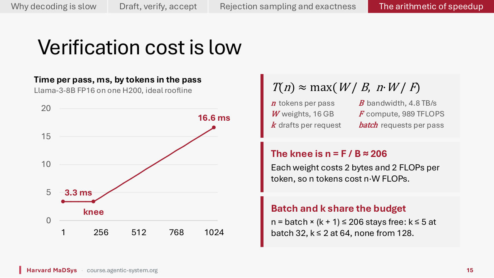
验证成本很低
（图：每次前向耗时（ms）随一次前向中 token 数的变化；单块 H200 上的 Llama-3-8B FP16，理想 roofline；拐点之前为 3.3 ms，1024 个 token 时为 16.6 ms）
T(n) ≈ max(W / B, n·W / F)
- n：每次前向的 token 数；B：带宽，4.8 TB/s；W：权重，16 GB；F：算力，989 TFLOPS
- k：每个请求的草稿数；batch：每次前向的请求数
拐点在 n = F / B ≈ 206
- 每个权重占 2 字节，每个 token 消耗 2 FLOPs，所以 n 个 token 消耗 n·W FLOPs
Batch 和 k 共享同一份预算
- n = batch × (k + 1) ≤ 206 时仍是免费的：batch 32 时 k ≤ 5，batch 64 时 k ≤ 2，batch 128 起一个都不行
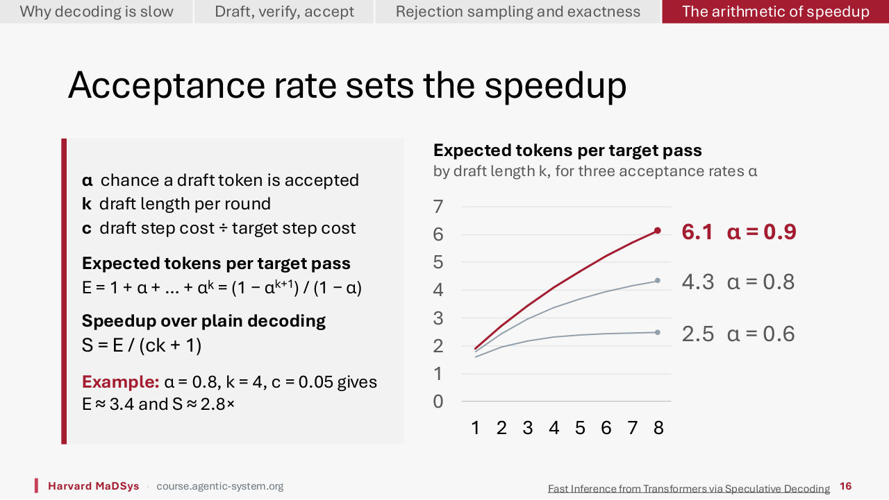
接受率决定加速比
- α：一个草稿 token 被接受的概率
- k：每轮的草稿长度
- c：草稿一步的成本 ÷ 目标模型一步的成本
每次目标模型前向的期望 token 数：E = 1 + α + … + αᵏ = (1 − αᵏ⁺¹) / (1 − α)
相对普通解码的加速比：S = E / (ck + 1)
例子：α = 0.8，k = 4，c = 0.05，得到 E ≈ 3.4、S ≈ 2.8×
（图：每次目标前向的期望 token 数随草稿长度 k（1–8）的变化，三种接受率：α = 0.9 时达 6.1，α = 0.8 时达 4.3，α = 0.6 时达 2.5）
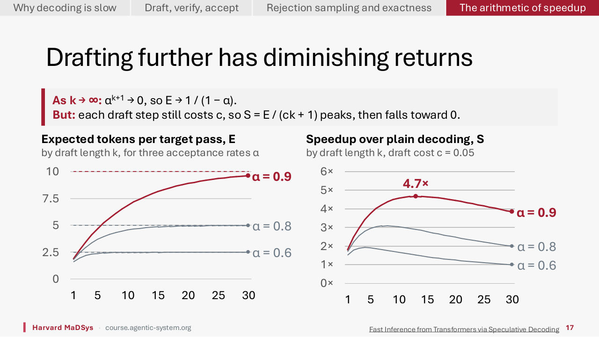
起草得越长，收益递减
- 当 k → ∞：αᵏ⁺¹ → 0，所以 E → 1 / (1 − α)
- 但是：每一步起草仍然要花 c，所以 S = E / (ck + 1) 会先达到峰值，然后下降趋向 0
（图：左为每次目标前向的期望 token 数 E 随 k 的变化（三种 α）；右为加速比 S 随 k 的变化（草稿成本 c = 0.05），α = 0.9 时峰值约 4.7×）
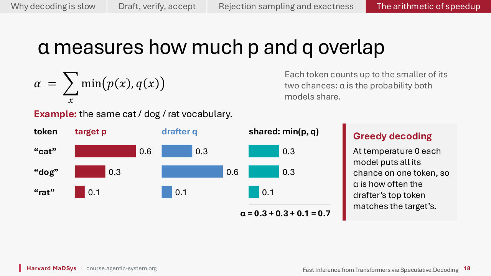
α 衡量 p 和 q 的重叠程度
α = Σx min(p(x), q(x))：每个 token 只计入它两个概率中较小的那个，α 就是两个模型共享的概率。
例子：同样的 cat / dog / rat 词表。
| token | 目标 p | 草稿 q | 共享：min(p, q) |
|---|---|---|---|
| “cat” | 0.6 | 0.3 | 0.3 |
| “dog” | 0.3 | 0.6 | 0.3 |
| “rat” | 0.1 | 0.1 | 0.1 |
α = 0.3 + 0.3 + 0.1 = 0.7
贪心解码：温度为 0 时，每个模型把全部概率放在一个 token 上，所以 α 就是草稿模型的 top-1 token 与目标模型一致的频率。
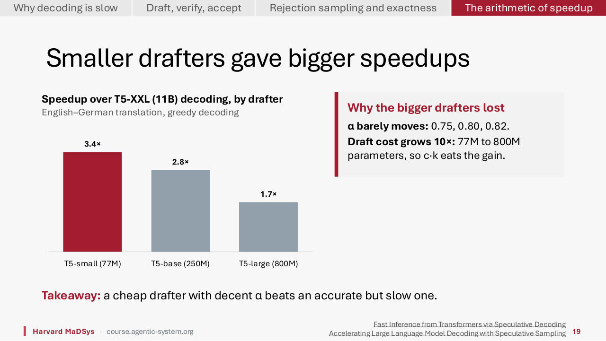
草稿模型越小，加速越大
（图：相对 T5-XXL（11B）解码的加速比，按草稿模型：T5-small（77M）3.4×，T5-base（250M）2.8×，T5-large（800M）1.7×；英—德翻译，贪心解码）
为什么更大的草稿模型输了
- α 几乎没变：0.75、0.80、0.82
- 草稿成本增长 10 倍：参数从 77M 到 800M，c·k 吃掉了收益
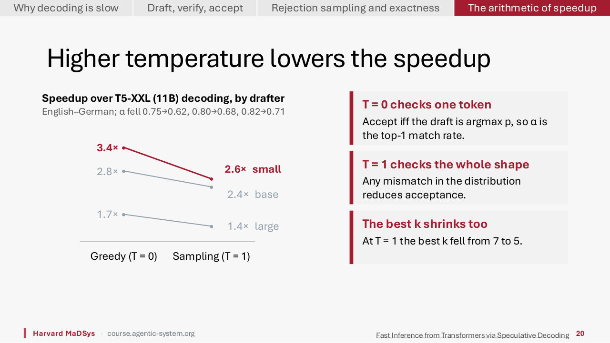
温度越高，加速越低
（图：相对 T5-XXL（11B）解码的加速比，贪心（T = 0）vs 采样（T = 1）：small 3.4× → 2.6×，base 2.8× → 2.4×，large 1.7× → 1.4×；英—德翻译；α 分别从 0.75→0.62、0.80→0.68、0.82→0.71）
- T = 0 只检查一个 token：当且仅当草稿是 p 的 argmax 时接受，所以 α 就是 top-1 匹配率
- T = 1 检查整个分布形状：分布上的任何不匹配都会降低接受率
- 最优 k 也变小了：T = 1 时，最优 k 从 7 降到 5
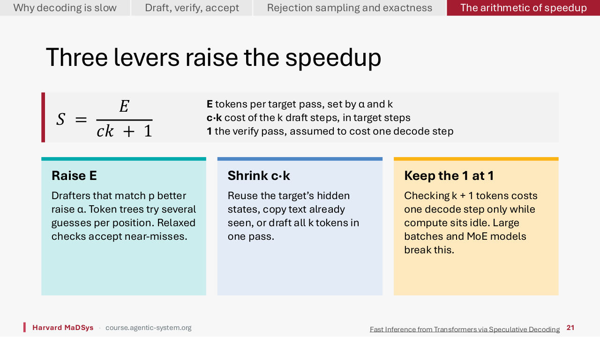
提高加速比的三个杠杆
S = E / (ck + 1)
- E：每次目标前向的 token 数，由 α 和 k 决定
- c·k：k 步起草的成本，以目标模型步数计
- 1：验证前向，假设其成本等于一次解码步
提高 E
- 与 p 更匹配的草稿模型能提高 α。token 树对每个位置尝试多个猜测。放宽的检查可以接受“差一点”的猜测
缩小 c·k
- 复用目标模型的隐藏状态，复制已经出现过的文本，或者一次前向起草全部 k 个 token
让 1 保持为 1
- 只要算力仍然闲置，检查 k + 1 个 token 就只花一次解码步的成本。大 batch 和 MoE 模型会打破这一点
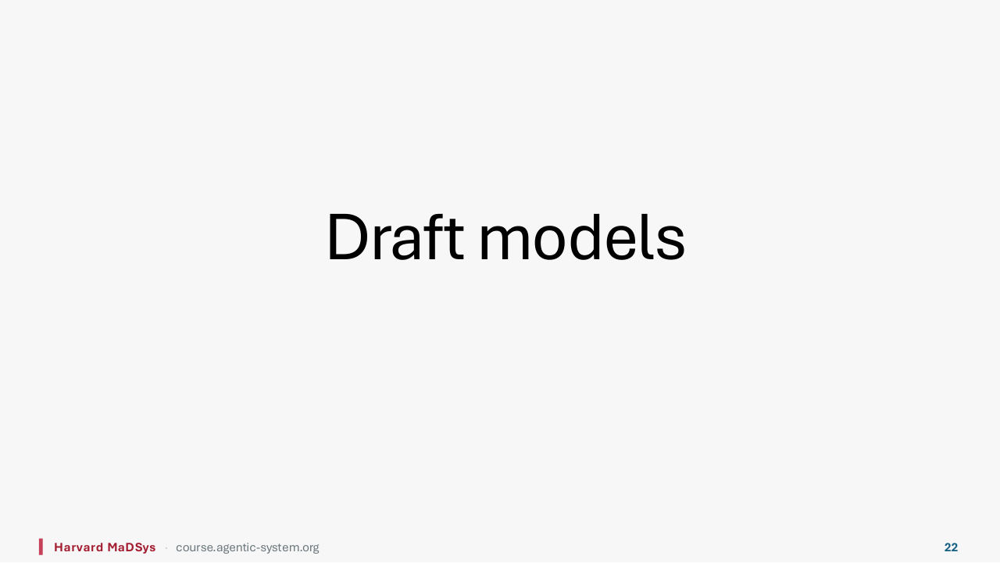
草稿模型
大多数草稿模型复用目标模型
| 草稿来源 | 类别 | 示例 |
|---|---|---|
| 一个独立的模型 | 独立小模型 | T5-small、Llama 3.2 1B |
| 目标模型自身的层或隐藏状态 | 自推测（Self-speculation） | LayerSkip、SWIFT |
| 目标模型自身的层或隐藏状态 | 预测头 | Medusa |
| 目标模型自身的层或隐藏状态 | 特征级草稿模型 | EAGLE、EAGLE-2、EAGLE-3 |
| 目标模型自身的层或隐藏状态 | 原生多 token 预测 | DeepSeek-V3 MTP |
| 目标模型自身的层或隐藏状态 | 并行与块草稿模型 | DFlash、DSpark |
| 已经出现过的文本 | 复制与检索 | N-gram 查找、SuffixDecoding |
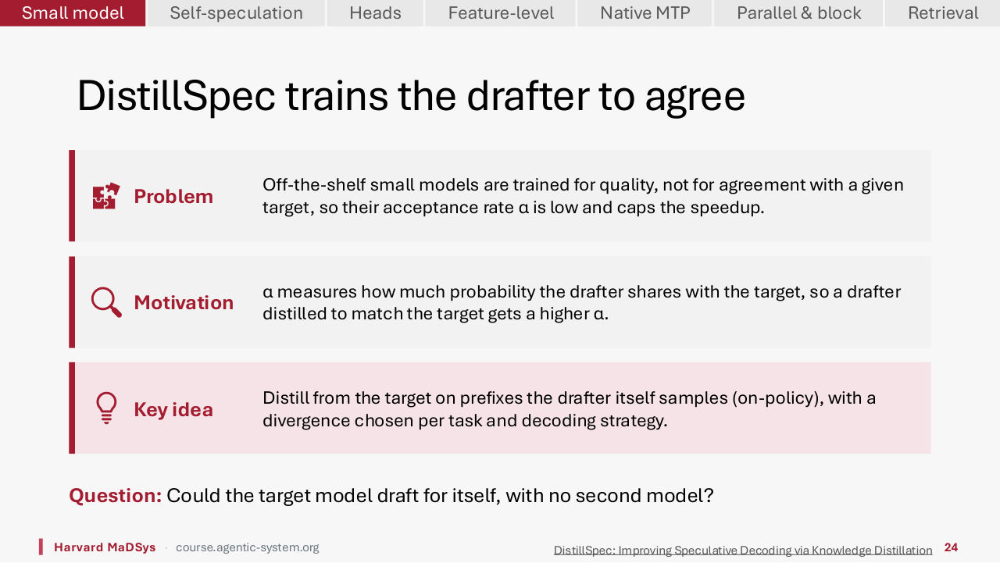
DistillSpec 训练草稿模型去“附和”目标模型
问题：现成的小模型是为质量而训练的，而不是为了与某个特定目标模型一致，所以它们的接受率 α 很低，限制了加速比。
动机：α 衡量草稿模型与目标模型共享多少概率，所以经过蒸馏、去匹配目标模型的草稿模型能获得更高的 α。
核心思想：在草稿模型自己采样出的前缀上（on-policy）从目标模型蒸馏，并按任务和解码策略选择散度函数。
（DistillSpec: Improving Speculative Decoding via Knowledge Distillation）
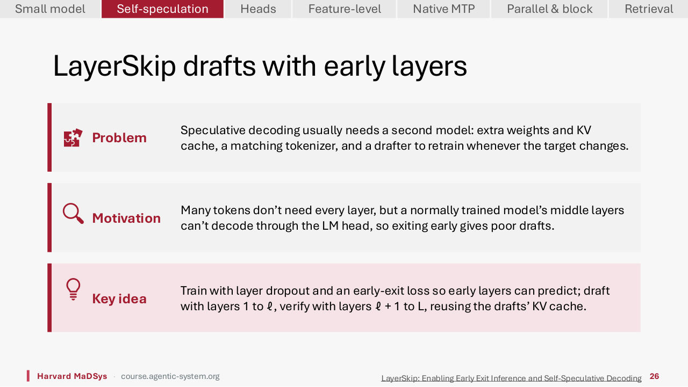
LayerSkip 用浅层起草
问题：推测解码通常需要第二个模型：额外的权重和 KV cache、匹配的分词器，以及每当目标模型变化时都要重新训练的草稿模型。
动机：许多 token 并不需要所有层，但正常训练的模型的中间层无法通过 LM head 解码，所以提前退出得到的草稿很差。
核心思想：用层 dropout 和提前退出损失来训练，让浅层也能做预测；用第 1 到 ℓ 层起草，用第 ℓ + 1 到 L 层验证，并复用草稿的 KV cache。
（LayerSkip: Enabling Early Exit Inference and Self-Speculative Decoding）
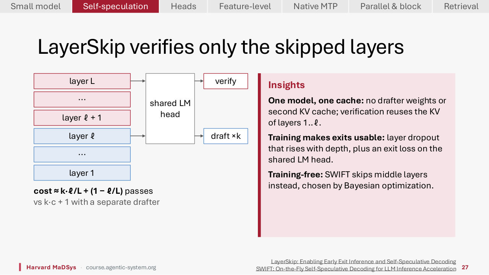
LayerSkip 只验证被跳过的层
（图：第 1 层 … 第 ℓ 层 → 共享的 LM head，起草 ×k；第 ℓ + 1 层 … 第 L 层负责验证）
- 成本 ≈ k·ℓ/L + (1 − ℓ/L) 次前向，而使用独立草稿模型时为 k·c + 1
洞察
- 一个模型，一份缓存：没有草稿模型权重，也没有第二份 KV cache；验证复用第 1..ℓ 层的 KV
- 训练让退出点可用：随深度递增的层 dropout，加上作用在共享 LM head 上的退出损失
- 无需训练的方案：SWIFT 则跳过中间层，跳哪些层由贝叶斯优化选出
（LayerSkip；SWIFT: On-the-Fly Self-Speculative Decoding for LLM Inference Acceleration）
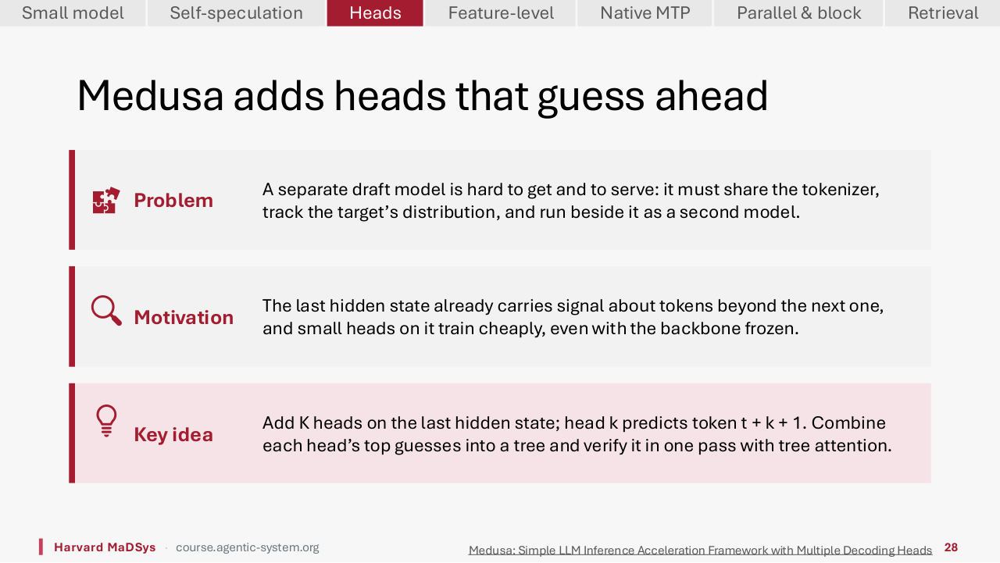
Medusa 加上预测更远 token 的头
问题：独立的草稿模型难以获得、也难以部署：它必须共享分词器、跟踪目标模型的分布，并作为第二个模型与之并行运行。
动机：最后一层的隐藏状态已经携带了关于下一个 token 之后更多 token 的信号，而在它上面加小的预测头训练成本很低，即使冻结主干也可以。
核心思想：在最后一层隐藏状态上加 K 个头；第 k 个头预测第 t + k + 1 个 token。把每个头的若干最佳猜测组合成一棵树，再用树注意力一次前向完成验证。
（Medusa: Simple LLM Inference Acceleration Framework with Multiple Decoding Heads）
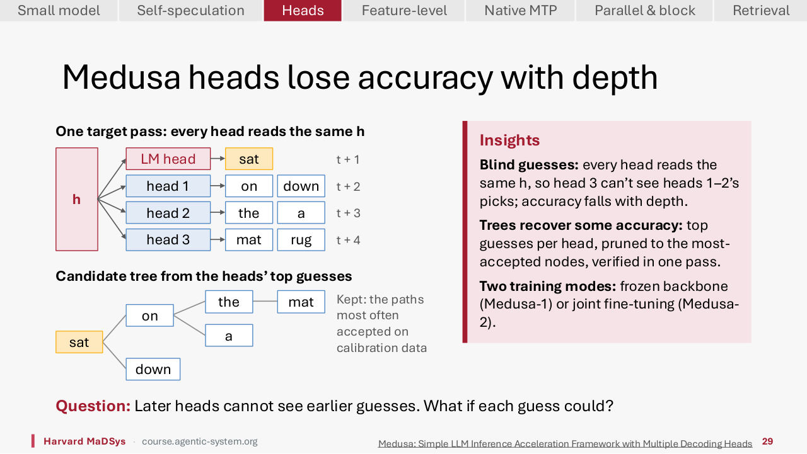
Medusa 的头越往后越不准
（图：一次目标前向中，每个头都读取同一个 h——LM head 预测 t + 1：sat；头 1 预测 t + 2：on / down；头 2 预测 t + 3：the / a；头 3 预测 t + 4：mat / rug。右侧为由各头最佳猜测构成的候选树，保留的是在校准数据上最常被接受的路径）
洞察
- 盲猜：每个头读的都是同一个 h，所以头 3 看不到头 1–2 选了什么；越往后准确率越低
- 树能挽回一部分准确率：取每个头的若干最佳猜测，剪枝到最常被接受的节点，一次前向验证
- 两种训练模式：冻结主干（Medusa-1）或联合微调（Medusa-2）
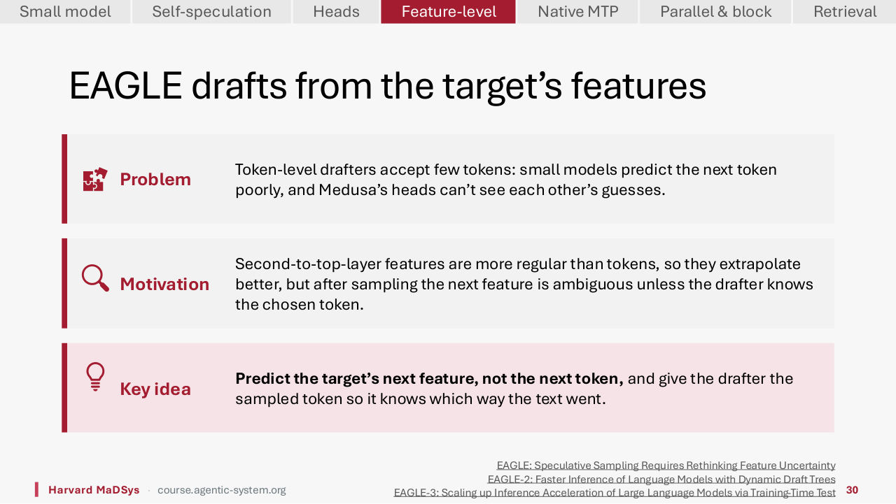
EAGLE 用目标模型的特征来起草
问题：token 级草稿模型被接受的 token 很少：小模型预测下一个 token 的能力很差，Medusa 的各个头又看不到彼此的猜测。
动机：倒数第二层的特征比 token 更有规律，所以更容易外推；但采样之后，下一个特征是有歧义的，除非草稿模型知道选中的是哪个 token。
核心思想：预测目标模型的下一个特征，而不是下一个 token；并把采样出的 token 交给草稿模型，让它知道文本往哪个方向走了。
（EAGLE: Speculative Sampling Requires Rethinking Feature Uncertainty；EAGLE-2: Faster Inference of Language Models with Dynamic Draft Trees；EAGLE-3: Scaling up Inference Acceleration of Large Language Models via Training-Time Test）
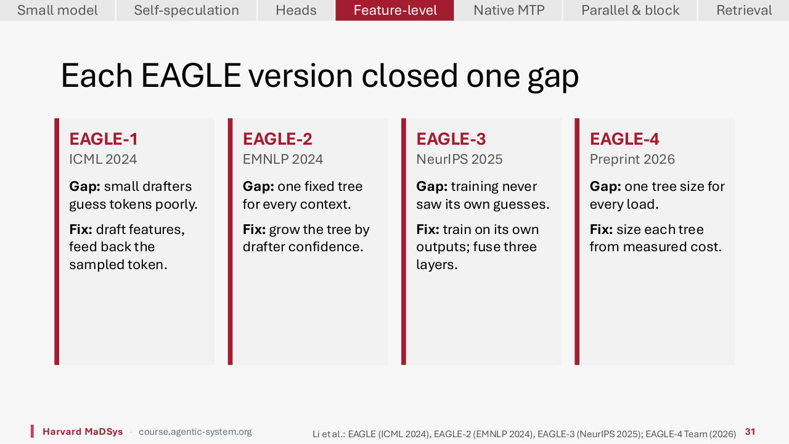
每个 EAGLE 版本都补上了一个缺口
| 版本 | 缺口 | 修正 |
|---|---|---|
| EAGLE-1（ICML 2024） | 小草稿模型猜 token 猜得很差 | 起草特征，并把采样出的 token 反馈回去 |
| EAGLE-2（EMNLP 2024） | 所有上下文都用同一棵固定的树 | 按草稿模型的置信度生长树 |
| EAGLE-3（NeurIPS 2025） | 训练时从未见过自己的猜测 | 在自己的输出上训练；融合三层特征 |
| EAGLE-4（2026 预印本） | 所有负载都用同一种树大小 | 根据实测成本决定每棵树的大小 |
（Li et al.: EAGLE (ICML 2024), EAGLE-2 (EMNLP 2024), EAGLE-3 (NeurIPS 2025)；EAGLE-4 Team (2026)）
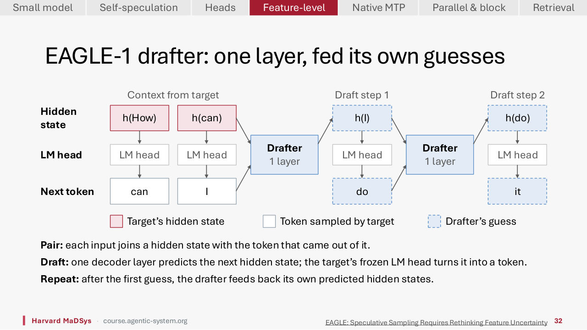
EAGLE-1 草稿模型：一层，喂入自己的猜测
（图：来自目标模型的上下文 h(How) + can → 草稿第 1 步：1 层草稿模型 → LM head → I；草稿第 2 步：h(I) + I → 1 层草稿模型 → LM head → do … it。图例：目标模型的隐藏状态 / 目标模型采样出的 token / 草稿模型的猜测）
- 成对：每个输入都把一个隐藏状态和由它产生的那个 token 拼在一起
- 起草：一个解码层预测下一个隐藏状态；目标模型冻结的 LM head 把它转成 token
- 重复：第一次猜测之后，草稿模型把自己预测的隐藏状态反馈回去
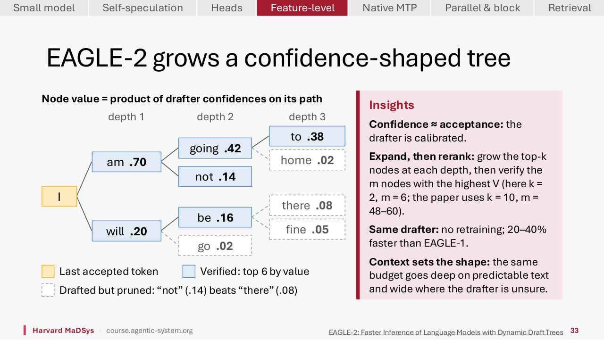
EAGLE-2 按置信度长出一棵树
节点价值 = 其路径上草稿模型置信度的乘积
（图：以最后一个已接受 token “I”为根——深度 1：am .70、will .20；深度 2：going .42、not .14、be .16、go .02；深度 3：to .38、home .02、there .08、fine .05。验证价值最高的 6 个节点；起草了但被剪掉：“not”(.14) 胜过 “there”(.08)）
洞察
- 置信度 ≈ 接受率：草稿模型是校准良好的
- 先扩展，再重排：在每个深度扩展前 top-k 个节点，然后验证 V 最高的 m 个节点（这里 k = 2、m = 6；论文中 k = 10、m = 48–60）
- 同一个草稿模型：无需重新训练；比 EAGLE-1 快 20–40%
- 上下文决定形状：同样的预算，在可预测的文本上长得深，在草稿模型不确定的地方长得宽
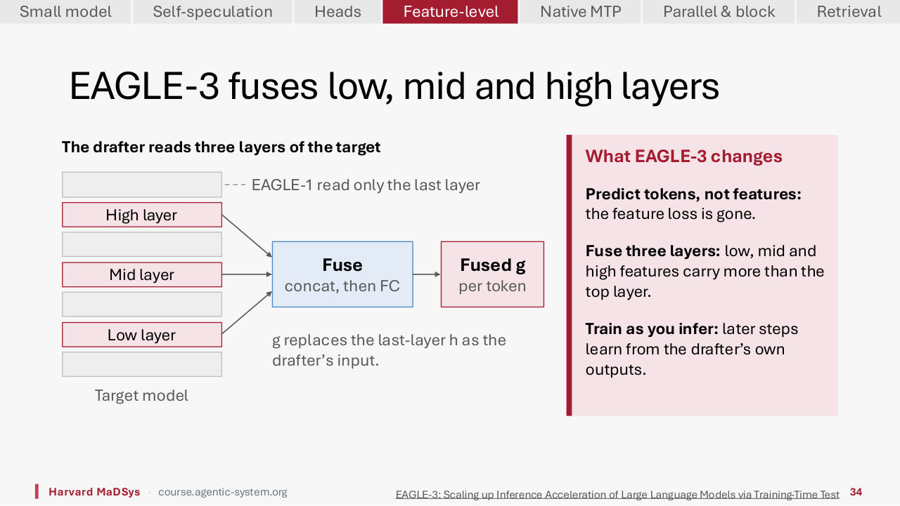
EAGLE-3 融合低、中、高层特征
（图：草稿模型读取目标模型的三层——高层、中层、低层；EAGLE-1 只读最后一层。融合：拼接后过全连接层 → 每个 token 一个融合特征 g；g 取代最后一层的 h，作为草稿模型的输入）
EAGLE-3 改变了什么
- 预测 token，而非特征：去掉了特征损失
- 融合三层：低、中、高层的特征比顶层携带更多信息
- 像推理一样训练：后面的步骤从草稿模型自己的输出中学习
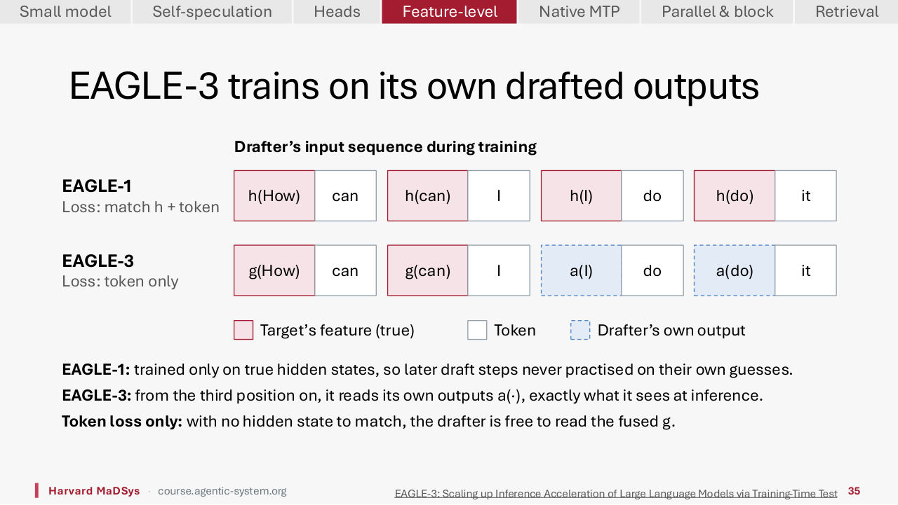
EAGLE-3 在自己起草的输出上训练
训练时草稿模型的输入序列：
- EAGLE-1（损失：匹配 h + token）：h(How) can · h(can) I · h(I) do · h(do) it
- EAGLE-3（损失：只有 token）：g(How) can · g(can) I · a(I) do · a(do) it
（图例：目标模型的特征（真实）/ token / 草稿模型自己的输出）
- EAGLE-1：只在真实隐藏状态上训练，所以后面的起草步骤从没在自己的猜测上练习过
- EAGLE-3：从第三个位置起，它读取自己的输出 a(·)，正是它在推理时会看到的东西
- 只用 token 损失：没有需要匹配的隐藏状态，草稿模型就可以自由地读取融合特征 g
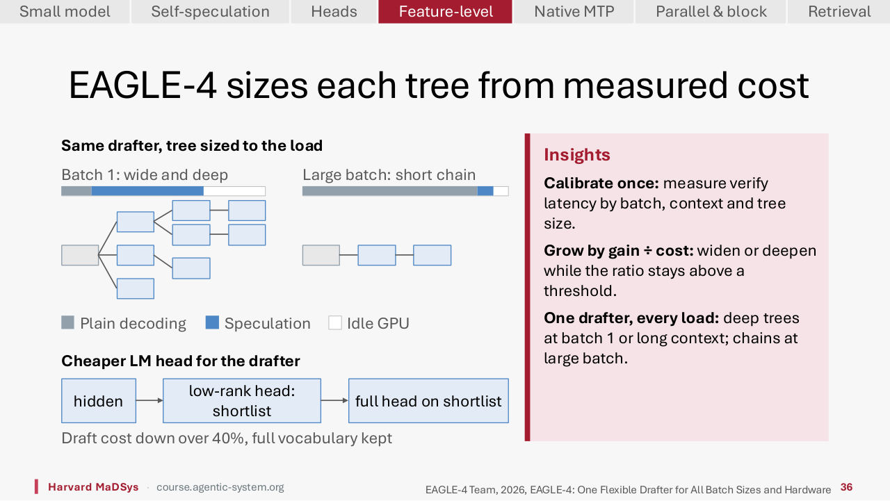
EAGLE-4 根据实测成本决定每棵树的大小
同一个草稿模型，树的大小随负载调整
- batch 1：又宽又深
- 大 batch：短链
给草稿模型一个更便宜的 LM head
- 隐藏状态 → 低秩 head：筛出候选短名单 → 在短名单上用完整 head
- 草稿成本降低超过 40%，仍保留完整词表
（图例：普通解码 / 推测 / GPU 空闲）
洞察
- 校准一次：按 batch、上下文和树大小测量验证延迟
- 按 收益 ÷ 成本 生长：只要这个比值高于阈值，就继续加宽或加深
- 一个草稿模型应对所有负载：batch 1 或长上下文时用深树；大 batch 时用链
（EAGLE-4 Team, 2026, EAGLE-4: One Flexible Drafter for All Batch Sizes and Hardware）
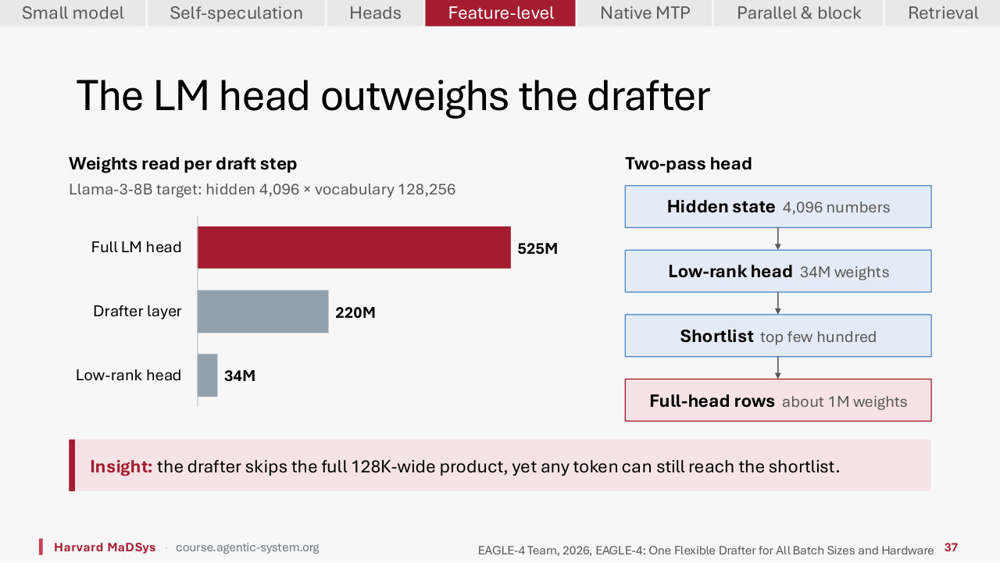
LM head 比草稿模型本身还重
每一步起草读取的权重（目标模型 Llama-3-8B：隐藏维度 4,096 × 词表 128,256）：
- 低秩 head：34M
- 草稿模型的层：220M
- 完整 LM head：525M
两阶段 head：隐藏状态（4,096 个数）→ 低秩 head（34M 权重）→ 短名单（前几百个）→ 完整 head 中对应的行（约 1M 权重）
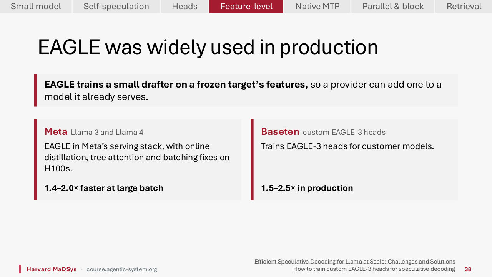
EAGLE 在生产中被广泛使用
EAGLE 在冻结的目标模型特征上训练一个小草稿模型，所以服务商可以给已经在部署的模型加上它。
- Meta：Llama 3 和 Llama 4——Meta 推理服务栈中的 EAGLE，配合在线蒸馏、树注意力和针对 H100 的批处理修复。大 batch 下快 1.4–2.0 倍
- Baseten：定制的 EAGLE-3 头——为客户模型训练 EAGLE-3 头。生产环境中 1.5–2.5 倍
（Efficient Speculative Decoding for Llama at Scale: Challenges and Solutions；How to train custom EAGLE-3 heads for speculative decoding）
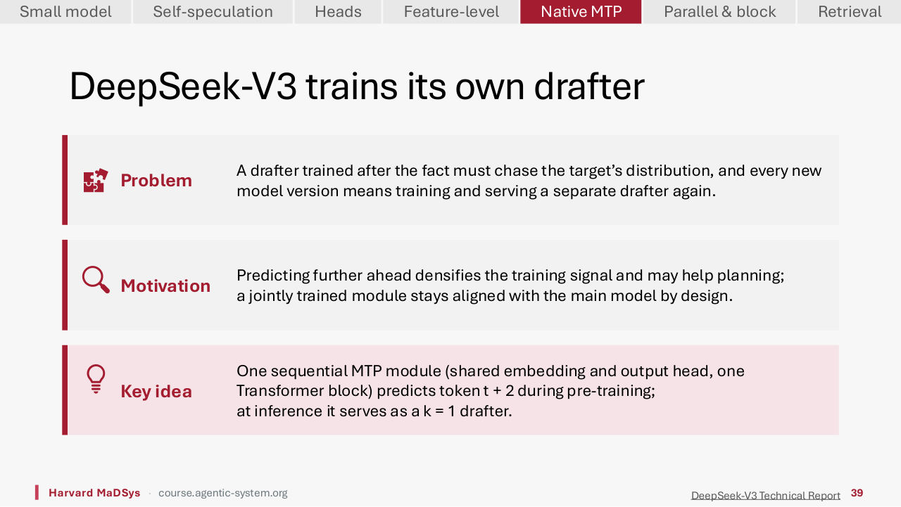
DeepSeek-V3 训练自己的草稿模块
问题：事后训练的草稿模型必须追赶目标模型的分布，而每出一个新模型版本，都要重新训练并部署一个独立的草稿模型。
动机：预测更远的 token 能让训练信号更密集，也可能有助于规划；与主模型联合训练的模块天然与其保持对齐。
核心思想：一个顺序的 MTP 模块（共享嵌入层和输出头，加一个 Transformer 块）在预训练时预测第 t + 2 个 token；推理时把它当作 k = 1 的草稿模型。
（DeepSeek-V3 Technical Report）
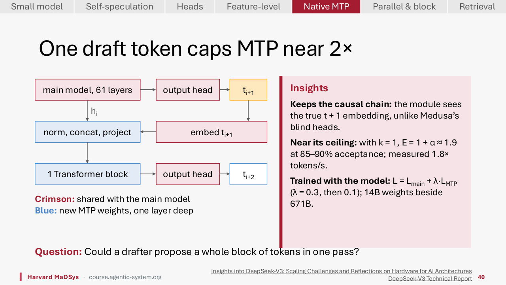
只有一个草稿 token，MTP 的上限接近 2 倍
（图：主模型 61 层 → 输出头 → tᵢ₊₁；hᵢ 与 tᵢ₊₁ 的嵌入经过归一化、拼接、投影 → 1 个 Transformer 块 → 输出头 → tᵢ₊₂。深红色：与主模型共享；蓝色：新增的 MTP 权重，只有一层深）
洞察
- 保持因果链：该模块能看到真实的 t + 1 嵌入，不像 Medusa 的头是盲猜
- 接近上限：k = 1 时，在 85–90% 接受率下 E = 1 + α ≈ 1.9；实测每秒 token 数提升 1.8 倍
- 与模型一起训练：L = L_main + λ·L_MTP（λ 先为 0.3，后为 0.1）；671B 之外另有 14B 权重
（Insights into DeepSeek-V3: Scaling Challenges and Reflections on Hardware for AI Architectures；DeepSeek-V3 Technical Report）
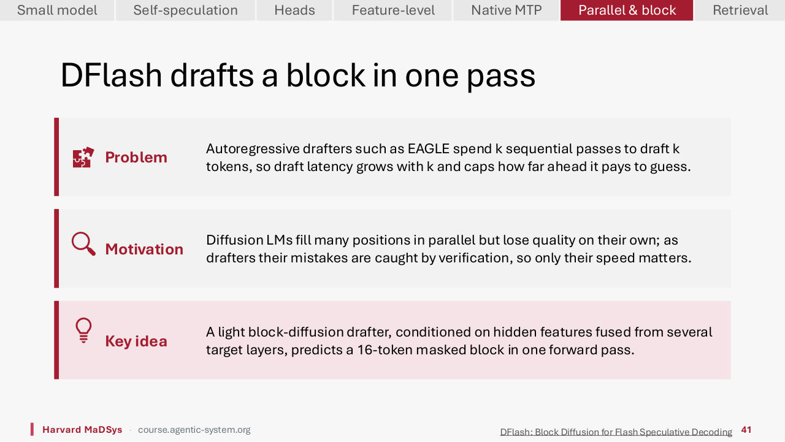
DFlash 一次前向起草一整块
问题：EAGLE 这类自回归草稿模型要花 k 次顺序前向才能起草 k 个 token，所以草稿延迟随 k 增长，也限制了往前猜多远才划算。
动机：扩散语言模型能并行填充许多位置，但单独使用时质量下降；作为草稿模型，它们的错误会被验证捕获，所以只有速度重要。
核心思想：一个轻量的块扩散草稿模型，以从目标模型多层融合而来的隐藏特征为条件，一次前向预测一个 16 token 的掩码块。
（DFlash: Block Diffusion for Flash Speculative Decoding）
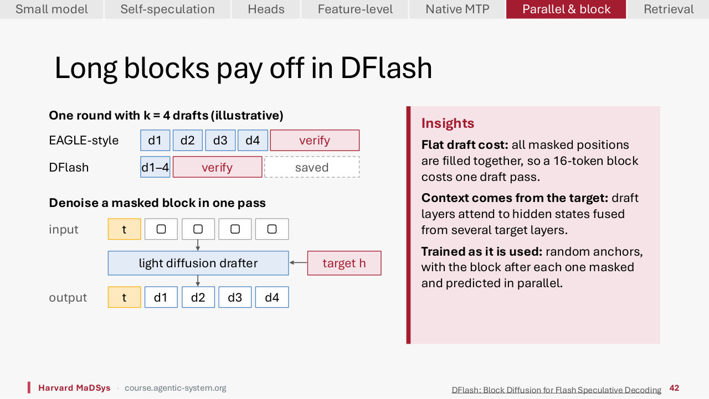
在 DFlash 中，长块更划算
（图：k = 4 草稿的一轮（示意）——EAGLE 式：d1 → d2 → d3 → d4 → 验证；DFlash：d1–4 一次完成 → 验证，节省的时间。一次前向给掩码块去噪：输入 t ▢ ▢ ▢ ▢ + 目标模型的 h → 轻量扩散草稿模型 → 输出 t d1 d2 d3 d4）
洞察
- 草稿成本是平的：所有掩码位置一起填充，所以 16 token 的块也只花一次草稿前向
- 上下文来自目标模型：草稿模型的层对从目标模型多层融合而来的隐藏状态做注意力
- 训练方式与使用方式一致：随机选取锚点，把每个锚点之后的块掩码掉并并行预测
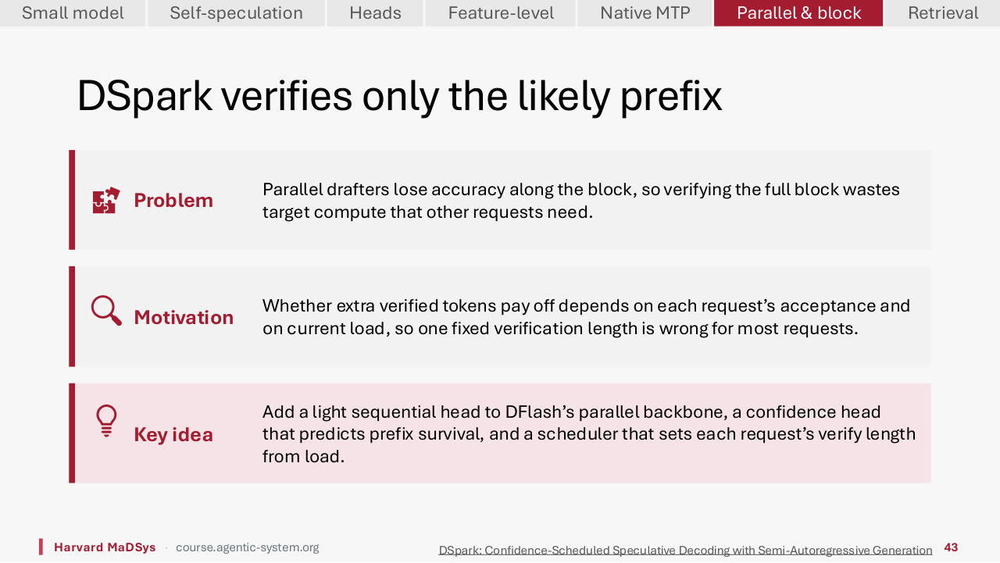
DSpark 只验证可能正确的前缀
问题：并行草稿模型沿着块越往后越不准，所以验证整个块会浪费其他请求需要的目标模型算力。
动机：多验证的 token 是否划算，取决于每个请求的接受率和当前负载，所以固定的验证长度对大多数请求都是错的。
核心思想：在 DFlash 的并行主干上加一个轻量的顺序头、一个预测前缀存活率的置信度头，以及一个根据负载为每个请求设定验证长度的调度器。
（DSpark: Confidence-Scheduled Speculative Decoding with Semi-Autoregressive Generation）
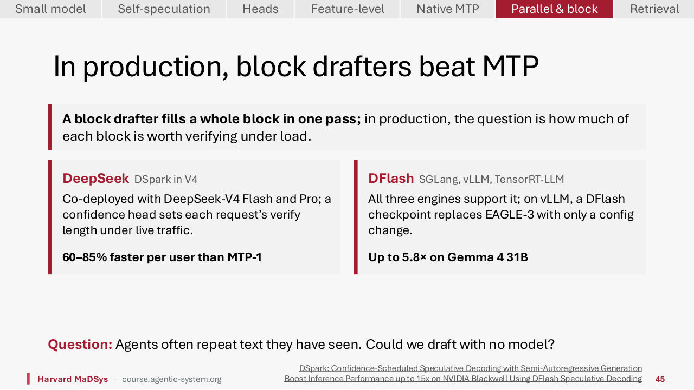
在生产中，块草稿模型胜过 MTP
块草稿模型一次前向填满整块；在生产中，问题是在负载下每块中有多少值得验证。
- DeepSeek：V4 中的 DSpark——与 DeepSeek-V4 Flash 和 Pro 一起部署；置信度头在真实流量下为每个请求设定验证长度。每用户比 MTP-1 快 60–85%
- DFlash：SGLang、vLLM、TensorRT-LLM——三个引擎都支持；在 vLLM 上，只改配置就能用 DFlash 检查点替换 EAGLE-3。在 Gemma 4 31B 上最高 5.8 倍
（DSpark；Boost Inference Performance up to 15x on NVIDIA Blackwell Using DFlash Speculative Decoding）
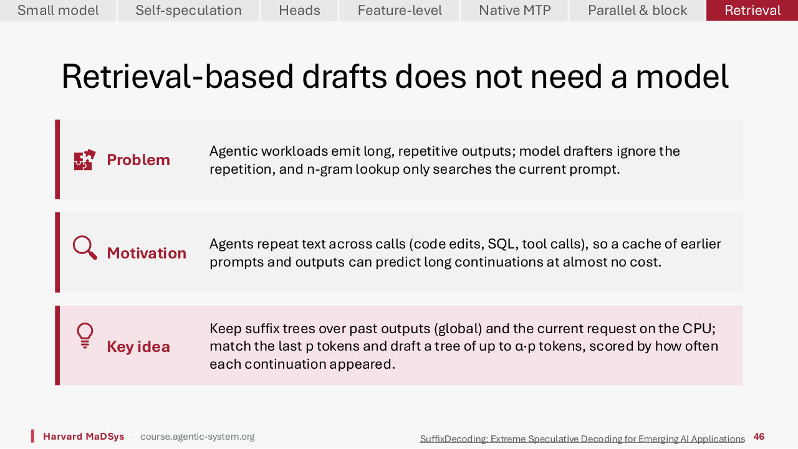
基于检索的草稿不需要模型
问题：智能体负载会输出又长又重复的内容；基于模型的草稿模型忽略了这种重复，而 n-gram 查找只在当前提示词里搜索。
动机：智能体会跨调用重复文本（代码编辑、SQL、工具调用），所以一个保存先前提示词和输出的缓存，几乎零成本就能预测很长的续写。
核心思想：在 CPU 上为过去的输出（全局）和当前请求维护后缀树；匹配最后 p 个 token，起草一棵最多 α·p 个 token 的树，并按每种续写出现的次数打分。
（SuffixDecoding: Extreme Speculative Decoding for Emerging AI Applications）
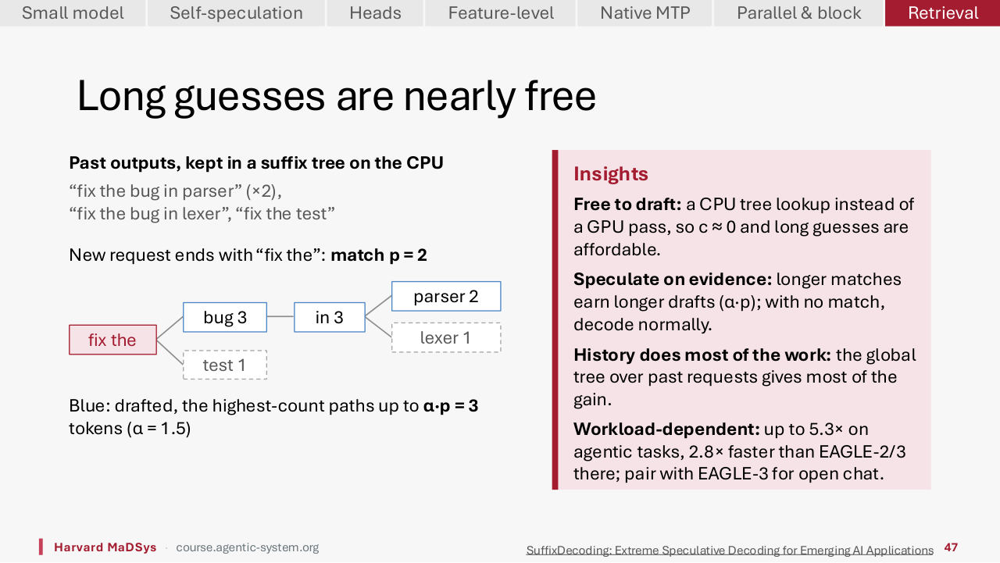
长猜测几乎是免费的
过去的输出，保存在 CPU 上的后缀树中：“fix the bug in parser”（×2）、“fix the bug in lexer”、“fix the test”
- 新请求以“fix the”结尾：匹配 p = 2
- 树：fix the → bug（3）→ in（3）→ parser（2）/ lexer（1）；fix the → test（1）
- 蓝色：起草的部分，即计数最高、长度不超过 α·p = 3 个 token 的路径（α = 1.5）
洞察
- 起草免费：一次 CPU 树查找而不是一次 GPU 前向，所以 c ≈ 0，长猜测也负担得起
- 凭证据推测：匹配越长，草稿越长（α·p）；没有匹配就正常解码
- 大部分工作由历史完成：基于过去请求的全局树贡献了大部分收益
- 取决于负载：在智能体任务上最高 5.3 倍，比 EAGLE-2/3 快 2.8 倍；开放式聊天则与 EAGLE-3 搭配使用
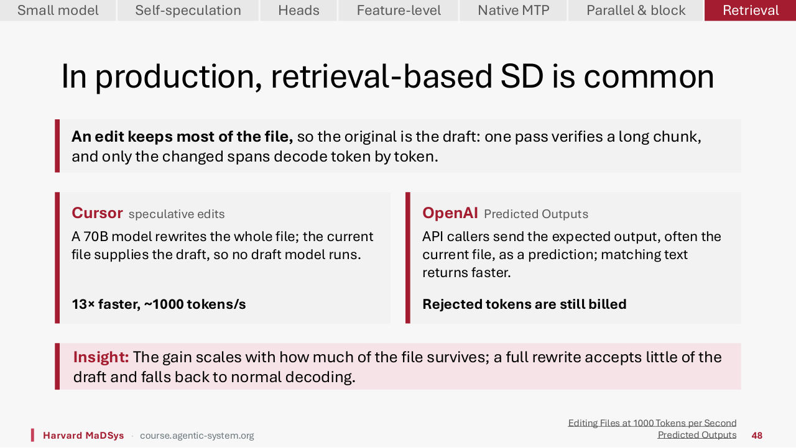
在生产中，基于检索的推测解码很常见
编辑会保留文件的大部分内容，所以原文件就是草稿：一次前向验证一长段，只有修改的部分逐 token 解码。
- Cursor：推测式编辑（speculative edits）——一个 70B 模型重写整个文件；当前文件提供草稿，不需要运行草稿模型。快 13 倍，约每秒 1000 个 token
- OpenAI：预测输出（Predicted Outputs）——API 调用方把预期的输出（通常是当前文件）作为预测传入；匹配的文本返回得更快。被拒绝的 token 仍然计费
（Editing Files at 1000 Tokens per Second；Predicted Outputs）
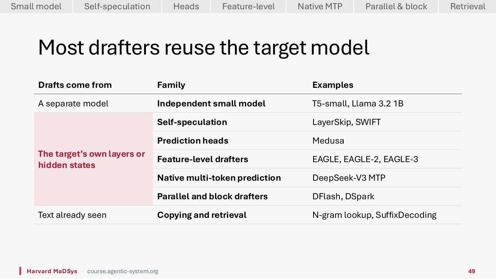
大多数草稿模型复用目标模型
| 草稿来源 | 类别 | 示例 |
|---|---|---|
| 一个独立的模型 | 独立小模型 | T5-small、Llama 3.2 1B |
| 目标模型自身的层或隐藏状态 | 自推测 | LayerSkip、SWIFT |
| 目标模型自身的层或隐藏状态 | 预测头 | Medusa |
| 目标模型自身的层或隐藏状态 | 特征级草稿模型 | EAGLE、EAGLE-2、EAGLE-3 |
| 目标模型自身的层或隐藏状态 | 原生多 token 预测 | DeepSeek-V3 MTP |
| 目标模型自身的层或隐藏状态 | 并行与块草稿模型 | DFlash、DSpark |
| 已经出现过的文本 | 复制与检索 | N-gram 查找、SuffixDecoding |
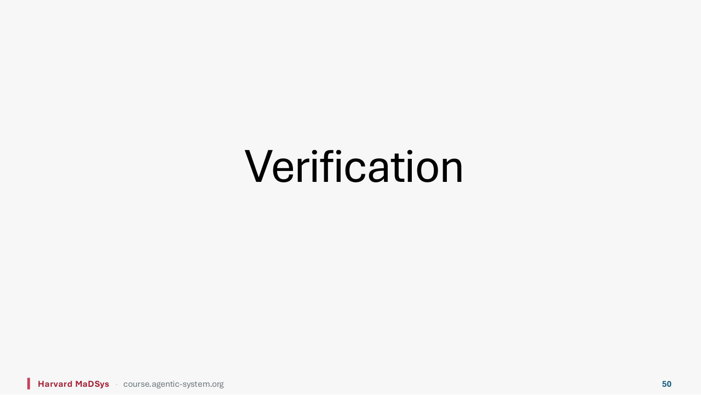
验证
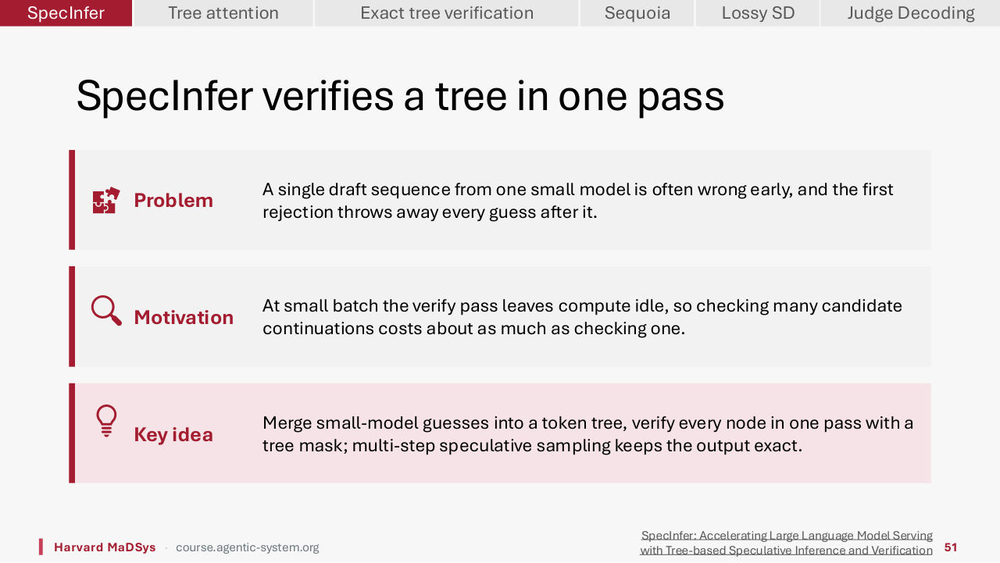
SpecInfer 一次前向验证一棵树
问题：单个小模型给出的单条草稿序列常常很早就出错，而第一次拒绝会丢掉它之后的所有猜测。
动机：batch 较小时，验证前向会让算力闲置，所以检查许多候选续写和检查一条的成本差不多。
核心思想：把小模型的猜测合并成一棵 token 树，用树掩码一次前向验证所有节点；多步推测采样保证输出仍然精确。
（SpecInfer: Accelerating Large Language Model Serving with Tree-based Speculative Inference and Verification）
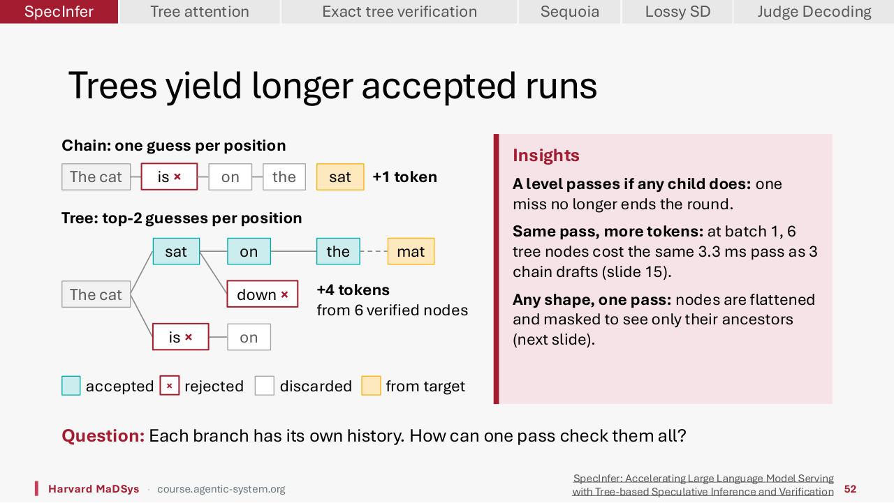
树能带来更长的接受序列
- 链：每个位置一个猜测——The cat → is ×（on、the 被丢弃）→ 只得 +1 个 token
- 树：每个位置前 2 个猜测——The cat → sat / is ×；sat → on / down ×；on → the → mat → 从 6 个已验证节点中得 +4 个 token
（图例：已接受 / × 被拒绝 / 丢弃 / 来自目标模型）
洞察
- 一层只要有一个子节点通过就算通过：一次失误不再终结整轮
- 同样的前向，更多 token：batch 1 时，6 个树节点与 3 个链式草稿花的是同样的 3.3 ms 前向（见第 15 页）
- 任意形状，一次前向：节点被展平并加掩码，只能看到自己的祖先（见下一页）
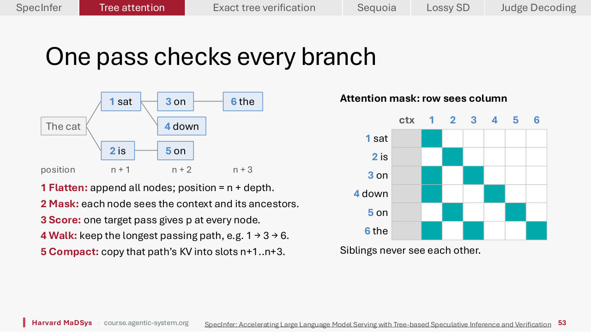
一次前向检查所有分支
（图：The cat 之后的树——1 sat、2 is、3 on、4 down、5 on、6 the）
- 展平：把所有节点追加到序列后；位置 = n + 深度
- 掩码：每个节点只能看到上下文和自己的祖先
- 打分：一次目标前向就给出每个节点上的 p
- 遍历：保留最长的通过路径，例如 1 → 3 → 6
- 压缩：把这条路径的 KV 复制到槽位 n+1..n+3
（图：注意力掩码——行能看到列；兄弟节点永远看不到彼此）
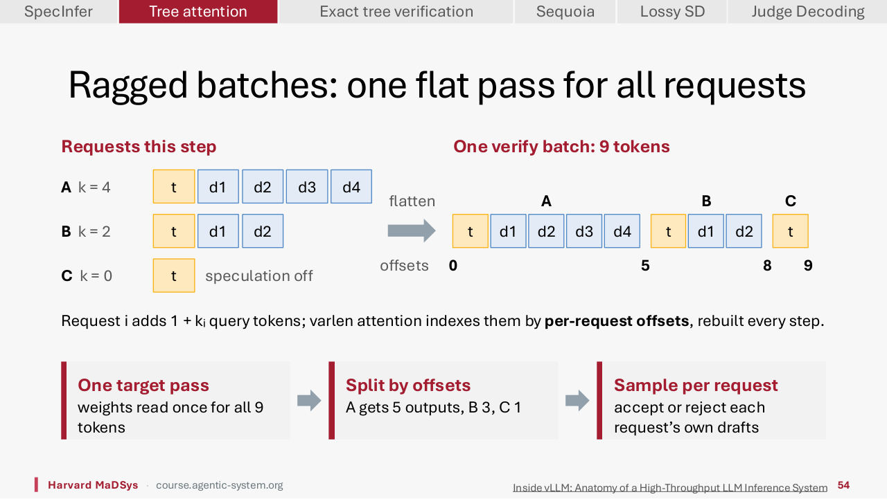
参差的 batch：所有请求一次展平前向
本步的请求：
- A：k = 4 → t d1 d2 d3 d4
- B：k = 2 → t d1 d2
- C：k = 0 → t（推测关闭）
展平 → 一个验证 batch：9 个 token（附带偏移量）
- 请求 i 增加 1 + kᵢ 个 query token；变长注意力按每个请求的偏移量索引它们，偏移量每一步都重建
- 一次目标前向：权重为全部 9 个 token 只读一次
- 按偏移量拆分：A 得到 5 个输出，B 3 个，C 1 个
- 按请求采样：各自接受或拒绝自己的草稿
（Inside vLLM: Anatomy of a High-Throughput LLM Inference System）
推测需要额外的算力
（图：每个保留 token 的目标模型 FLOPs，相对普通解码；每次前向 k = 4 个草稿；不含草稿模型 FLOPs——α = 0.5：2.6×，0.6：2.2×，0.7：1.8×，0.8：1.5×，0.9：1.2×）
- 每个保留 token 的成本 = (k + 1) / E；E = (1 − αᵏ⁺¹)/(1 − α) 为每次前向保留的 token 数
浪费去了哪里
- α = 0.8、k = 4 时：5 个已验证位置中保留 3.36 个，扔掉 1.64 个
草稿模型的 FLOPs 还要另算
- 每轮相当于 k·Nd/Nt 次目标前向：1B → 8B、k = 4 时为 0.6
Sequoia 选出最优的树形状
问题：固定形状的树在变大后不再有收益，top-k 采样在某些温度下会失效，而且没有一种树大小适合所有 GPU。
动机：每个子节点位置的接受率可以针对每对模型测量一次，所以给定节点预算下的最优树就成了一个优化问题。
核心思想：用动态规划构造使期望接受 token 数最大的树；无放回采样让验证保持稳健；由一个性能分析器为每种 GPU 选择树的大小和深度。
（图：固定的树会进入平台期；top-k 会漏掉采样结果；GPU A / GPU B——没有一种大小适合所有 GPU）
（Sequoia: Scalable, Robust, and Hardware-aware Speculative Decoding）
按 GPU 确定树的大小
E ≈ Σ_{v∈T} Π_{u∈path(v)} c_u（c：草稿模型置信度）
（图：The cat 之后——sat .60、is .30；sat 下 on .48、down .09；is 下 on .21；on 下 the .43。蓝色 = 保留的前 4 个：E ≈ .60 + .48 + .43 + .30 = 每次前向 1.81 个）
洞察
- 贪心就够了：路径价值只会越来越小，所以价值最高的 m 个节点必然构成一棵树；动态规划能多找到最多 33% 的 token
- 对数回报：接受的 token 数大致随树大小对数增长，但过了拐点后验证成本线性增长
- 在 SGLang 中：num-steps = 深度，eagle-topk = 宽度，num-draft-tokens = m
（Sequoia；EAGLE-2；Speculative Decoding, SGLang Documentation）
有损推测解码：放松这个循环
（图：草稿模型（the old cat sat）→ 目标模型给草稿打分 → 保留？（精确检验）→ 输出；旁边可加一个“裁判”（学习得到的模型）。五个可放松的点：起草什么 / 什么算匹配 / 谁来验证 / 检验规则 / 加一个裁判）
精确的推测解码起草 token，并对照完整的目标模型验证。每个编号点都是一种接受更多草稿的方式，而每一种都会改变输出分布。
起草整个推理步骤
（图：草稿模型写出“so x = 4”→ 目标模型给这一步打分 → 保留？（分数够高吗？）→ 输出）
思路：草稿模型写出一整个推理步骤。目标模型或裁判给它打分，只有低分的步骤才重新生成。
方法：SpecReason、Lookahead Reasoning、ConfSpec、SPEC-RL
接受近似相同的 token
（图：目标模型更偏好“kitten”→ 保留？（够接近吗？））
思路：保留一个与目标模型选择足够接近的草稿 token，例如目标模型更想要“kitten”时保留“cat”，或者一个相邻的图像 token。
方法：LANTERN、grouped SD、speech SSD、Spec-VLA
用更便宜的目标模型验证
（图：目标模型换成“更便宜的副本”→ 保留？（精确检验））
思路：用目标模型的一个更便宜的副本来检查草稿，比如使用稀疏 KV cache 或更少的激活专家。验证成本更低，但输出会偏离完整模型。
方法：Dustin、MoE-Spec
放宽接受检验
（图：保留？（更宽松的检验））
思路：用更宽松的规则替换精确的接受规则：只要目标模型认为某个草稿 token 足够可能就保留它，即使精确检验会拒绝。
方法：Lenience、top-β、typical acceptance
让裁判留下“好的拒绝”
（图：裁判可以推翻精确检验的结果）
思路：一个小分类器读取目标模型在被拒绝 token 处的隐藏状态，如果这个不匹配不会损害答案，就保留该 token。
方法：Judge Decoding、AutoJudge、SelfJudge、FLy
有损推测解码的放松：五个可以多接受的地方
| 位置 | 做法 | 方法 |
|---|---|---|
| 起草什么 | 起草整个推理步骤，由奖励模型或裁判打分 | SpecReason、Lookahead Reasoning、ConfSpec、SPEC-RL |
| 什么算匹配 | 接受与目标模型选择接近的近似 token | LANTERN、grouped SD、speech SSD、Spec-VLA |
| 谁来验证 | 用更便宜的目标模型验证：稀疏 KV 或更少专家 | Dustin、MoE-Spec |
| 检验规则 | 放宽接受规则本身 | Lenience、top-β、typical acceptance |
| 加一个裁判 | 一个小分类器推翻部分拒绝 | Judge Decoding、AutoJudge、SelfJudge、FLy |
在系统中优化推测解码
推测装进一个引擎步骤里
一个请求，k = 4：
- 起草（草稿模型 q）：The cat | sat on the mat
- 验证（目标模型 p）：The cat | sat on the mat
- 接受（采样器）：The cat | sat ✓ on ✓ the ✗ mat ✗
- 提交（调度器）：The cat sat on a
（图例：已提交 / 最后一个 token t / 草稿 / 已接受 / 被拒绝）
（Inside vLLM: Anatomy of a High-Throughput LLM Inference System；Consistent semantics for drafted, verified and accepted spec decode tokens）
步耗时：在 GPU 忙起来之前，草稿不花钱
（图：每次验证前向的步耗时（ms）随 batch 大小的变化；理想 H200 roofline，Llama-3-8B FP16，只计权重——k = 0 与 k = 4 对比：batch 1、16 时为 3.3 ms；batch 64、k = 4 时 320 个 token，已越过拐点，为 5.2 ms（k = 0 为 4.2 ms）；batch 256、k = 4 时为 20.8 ms）
- 约 206 个 token 之前是平的：每次前向都在等 16 GB 的权重读取，所以 80 个 token 和 16 个 token 的成本一样
- 过了这一点，每个 token 都会增加时间：每个约 0.016 ms，所以 1,280 个 token 需要 20.8 ms
（NVIDIA, 2024: H200 Tensor Core GPU datasheet（4.8 TB/s HBM3e，989 TFLOPS 稠密 BF16））
大 batch 吃掉了免费算力
（图：一次验证前向中每次权重读取对应的 token 数，k = 4；H200 需要约 206 才能保持忙碌（第 5 页）；只计权重——batch 1：5 个 token；batch 16：80 个；batch 64：320 个；上限 ≈ 206）
低于上限时，5 个 token 的成本和 1 个差不多；高于上限时，每个 token 都增加时间。
每用户速度 vs 总速度
- batch 16：k = 4 把每个用户从 299 提升到 1,005 tok/s，步耗时仍是 3.3 ms
- batch 64：每次前向 320 个 token，5.2 ms：每用户 647 tok/s，总计 41K
- batch 256：k = 4 把步耗时拉长到 20.8 ms：每用户 162 tok/s，总计 41K，低于 k = 0 时的 241 和 62K
（理想 H200 roofline，α = 0.8，只计权重，草稿免费）
（Optimizing Speculative Decoding for Serving Large Language Models Using Goodput）
TurboSpec 每一步都选择 k
问题：在连续批处理下，推测可能反而提高延迟：在高请求率或低接受率时，验证被拒绝的草稿会占用其他请求的算力。
动机：最优 k 取决于 batch 大小和接受率，二者每一步都在变化；但接受长度和批处理后的步耗时都是可预测的。
核心思想：有效吞吐 = 生成的 token 数 ÷ 步耗时。根据每个请求的接受历史预测其接受长度，用线性模型预测步耗时；为每个请求选择使有效吞吐最大的 k。
（Optimizing Speculative Decoding for Serving Large Language Models Using Goodput）
TurboSpec 每一步都运行一个有效吞吐循环
- 跟踪 α：接受率 α 的移动平均
- 预测 E：每个 k（包括 k = 0）的期望保留 token 数 E(k)
- 预测 T：用批处理 token 数的线性模型预测步耗时 T
- 选择 k：选出有效吞吐 E / T 最高的 k，然后运行这一步
下一步：用实际接受的情况更新 α
它的选择（α = 0.8）
- batch ≤ 16：k ≈ 5
- batch 64：k ≈ 2
- batch 256：k = 0
batch 越大，最优 k 越小
（图：有效吞吐相对普通解码的倍数，按每步草稿数 k；模型：理想 H200 roofline，Llama-3-8B，1B 草稿模型，α = 0.8——batch ≤ 16 峰值 2.08×；batch 64 峰值 1.86×；batch 256 在 k = 0 时 1.00×，k 增大后跌到 0.42×）
洞察
- 优化有效吞吐，而不是接受率：Σ Eᵢ(kᵢ) ÷ 步耗时；E 来自接受历史，步耗时来自线性模型
- 最优 k 随负载变小：在这个模型中，batch 16 以内约为 5，batch 64 时为 2，256 时为 0；SmartSpec 在小 batch 下观察到 > 4
- 起草有成本：每多一个草稿就多一次草稿模型前向（这里 1B 模型为 0.52 ms），所以即使小 batch 也有峰值
- 永远不会比关闭更差：峰值负载时它什么也不提议；轻负载时延迟最多降低 3.2 倍
长上下文让推测重新划算
问题：人们认为推测只在小 batch 下才划算。
动机：在长上下文下，KV 读取占主导，所以大 batch 仍然受内存带宽限制。
核心思想：在固定大小的稀疏 KV cache 上起草；在完整的 cache 上验证。
（图：目标模型在完整 KV cache 上验证；草稿模型在稀疏 KV cache 上起草——只保留 sink token 和最近窗口，中间部分被草稿模型跳过）
（MagicDec: Breaking the Latency-Throughput Tradeoff for Long Context Generation with Speculative Decoding）
KV 读取是每个请求私有的
权重：读一次服务整个 batch
- 16 GB 权重 → 请求 1 · 5 个 token；请求 2 · 5 个 token；… 请求 32 · 5 个 token
- 每字节 160 FLOPs：32 个请求 × 5 个 token 共享一次权重读取，所以批处理能把它推向 H200 保持忙碌所需的 206
KV cache：每个请求读自己的
- KV 1 GB → 请求 1 · 5 个 token；KV 1 GB → 请求 2 · 5 个 token；… 请求 32
- 每字节 20 FLOPs：8K 上下文下每份 1 GB 只服务它自己的 5 个 token（使用 GQA 时每个 token 每字节 4 FLOPs），无论 batch 多大都远低于 206
长上下文下，加速比随 batch 增长
（图：每个解码步读取的字节数（GB），Llama-3-8B，batch 32，一块 H200；灰色：权重，红色：KV cache——1K 上下文 20.4 GB，8K 上下文 50.4 GB）
（图：8K 上下文下每次前向的 KV 读取——验证读全部 8K token；起草只读 sink 和窗口，其余跳过。起草成本不随上下文增长；草稿模型甚至可以就是目标模型本身）
洞察
- KV 读取无法共享：batch 32、8K 上下文时，每步读 34 GB 的 KV，而权重只有 16 GB
- 注意力始终受内存带宽限制：使用 GQA 时每个 KV 字节约 4 FLOPs，带 k 个草稿时为 4(k + 1)，远小于 206
- 超过约 4K token 后，收益随 batch 增长：在 batch 32–256 下最高 2.51 倍（Llama-3.1-8B）
Cascade 为 MoE 关闭推测
问题：在 MoE 模型上，每个被验证的 token 都会路由到各自的专家，所以验证 k 个草稿要读多得多的权重；始终开启推测会让请求最多变慢 1.5 倍。
动机：收益因模型和任务而异（Mixtral，k = 3：代码任务快 39%，数学任务慢 54%），但在一个请求的短时间窗口内保持稳定。
核心思想：效用 = token 收益 ÷ 验证成本。对每个请求，先短暂测试几个 k，然后用最好的 k 跑一个较长的阶段；当效用低于 1 时就关闭推测。
（Utility-Driven Speculative Decoding for Mixture-of-Experts）
短测试限制了 MoE 的变慢
（图：一个 Mixtral 层，k = 7：8 个专家，每个 token 2 个——解码 1 个 token 只用 2 个专家；验证 8 个 token 约用 7 个专家）
- N(1 − (1 − k/N)ⁿ) ≈ 8 个中的 7.2 个（3.6 倍）；实测约 3 倍，因为相邻 token 会共享专家
- Cascade 在一个请求上：测试 → 运行 k = 2 → 测试 → 关闭 → 测试……短测试、较长的固定阶段；效用 < 1 时关闭推测
洞察
- 效用在短窗口内是稳定的：一次短暂测试就能预测接下来更长的阶段
- 关闭也有一点成本：草稿模型仍在运行，以保持其 KV 是最新的（2–3%）
- 专家越细，伤害越大：8 个 token 在 DeepSeek-V3 中读取 7.2 倍的路由专家，在 Mixtral 中为 3.6 倍（均匀路由下）
- 结果：最坏情况只慢 5%，而不是 1.5 倍；吞吐比静态 k 高 7–14%
在运行时决定 k
- SmartSpec（batch 大小）：E 来自接受历史，T 来自线性步耗时模型；峰值负载时选 k = 0。延迟最多降低 3.2 倍
- Cascade（MoE）：在短阶段中测试 k；效用低于 1 时关闭推测，但草稿模型继续运行以保持 KV 最新（2–3%）。最坏情况：慢 5%
- DSpark（生产环境）：置信度头估计前缀存活率；调度器根据负载画像为每个请求设定验证长度。每用户快 60–85%
有效吞吐 = Σᵢ Eᵢ(kᵢ) / T(Σᵢ (1 + kᵢ))：为每个 kᵢ 选值以使其最大。
- E：请求 i 的期望保留 token 数 · T：处理这么多 batch token 的步耗时
每个想法都在拉三个杠杆之一
S = E / (ck + 1)
提高 E：每次前向接受更多 token
- 训练草稿模型去附和目标模型：DistillSpec、EAGLE-3
- 尝试一棵猜测树：SpecInfer、EAGLE-2、Sequoia
- 接受“差一点”的猜测
缩小 c·k：让起草更便宜
- 复用目标模型：LayerSkip、Medusa、EAGLE、MTP
- 一次前向起草全部 k 个：DFlash、DSpark
- 复制已出现过的文本：N-gram 查找、SuffixDecoding
让 1 保持为 1：让验证保持一步的成本
- 按负载确定 k：SmartSpec、EAGLE-4
- 在长上下文下推测：MagicDec
- 对 MoE 关闭推测：Cascade
- 只验证可能正确的前缀：DSpark
下节课
- 11 月 16 日（周一）：高效 LLM 推理服务：KV-cache 优化与模型架构（学生主讲）
- 11 月 18 日（周三）：学生分享 III：展示你的推理服务引擎（作业 4）
- 作业 5（Mads-Stack：优化整个技术栈）今天发布；截止时间为 11 月 24 日（周二）晚 11:59
拓展主题
- 有损推测解码
S = E / (ck + 1)
（空白页）
（本页无内容）